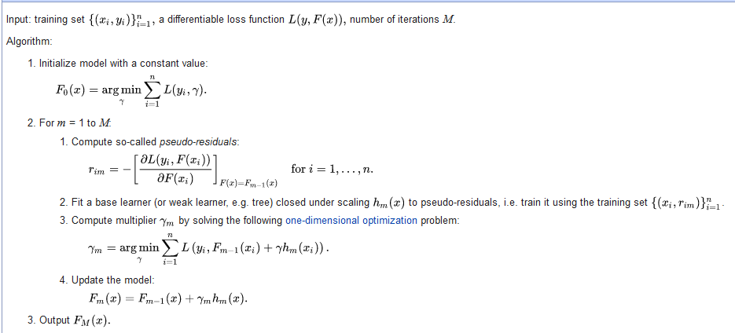

Gradient Boosting (GB) is one of the most popular algorithms in the Machine Learning/Data Science community. You might heard about various version of boosting algorithms like Ada-boost, XG Boost, LG Boost, CatBoost. They are very famous for wining the Kaggle competition. In this article, I want to talk about the vanilla Gradient Boosting and it’s working principle with some mathematical background.
The fundamental working principle of the boosting algorithms is to combine a number of weak learner into a stronger ensemble. The boosting algorithms sequential trains the weak learners and repeat the process.
Let us straight dive into the algorithm and it’s working principle then it will make more sense to you. Below picture is captured from the Wikipedia article which shows the pseudo algorithm. You can also find the in-depth description on the original paper by Friedman (2001).

Let’s look at the step one of the algorithm.
\[F_0(x) = \underset{\gamma}{\operatorname{argmin}} \sum_{i=1}^{n}L(y_i, \gamma)\] In the first step we need to find the constant value to initialize our base learner/first weak learner. From the equation, we see that we need to find \(\gamma\) such that it minimized our loss function. Now, we need a loss function. Let’s assume we are working on the regression problem and we choose are loss function to be squared error(SE). Keep in mind, you can choose another loss function also. The formula for SE is:
\[SE = (y_i - \hat{y_i})^2\]
Here, we will replace \(\hat{y_i}\) with our \(\gamma\) and the function becomes: \[L_{SE} = (y_i - \gamma)^2\]
The question arises how we will find the value that minimized the loss function. Here, comes our old friend derivative. We will take derivative of the loss function with respect to \(\gamma\) and then equalize to zero to find the minimum value. The above SE equation only showed error for a observation. We have to sum the error of whole data to get total error. Therefore, the equation changes to:
\[\frac{\partial}{\partial {\gamma}} (\sum_{i=1}^n(y_i - \gamma)^2)\]
Let’s apply chain rule and we will get:
\[2 \sum_1^n (y_i -\gamma) \left(\frac{\partial(y_i - \gamma)}{\partial{\gamma}}\right)\] \[2 \sum_1^n (y_i -\gamma) \left(\frac{\partial{y_i}}{\partial{\gamma}} - \frac{\partial{\gamma}}{\partial{\gamma}}\right)\] \[2 \sum_1^n (y_i -\gamma) (-1)\]
Now, to find the value of \(\gamma\) that minimized the function, we will equalize above equation with zero.
\[\Rightarrow -2 \sum_{i=1}^n(y_i-\gamma) = 0\] \[\Rightarrow \sum_{i=1}^ny_i - n\gamma = 0\] \[\gamma = \frac{\sum_{i=1}^ny_i}{n} \tag{1}\]
If you look at the \(Eq1\), you will see that \(\gamma\) is equal to the mean of the target value(considering this as a regression problem). Therefore, the predicted value of our first weak model is the mean of the dependent variable. Meaning, if we choose mean to be our base learners predicted value then it will minimize the loss.
In the step 2, we iterate the below process for \(M\) times. Here, \(M\) represents the number of trees one wants in their GB algorithm.
In step 2.1, we are calculating the residual. We compute the pseudo-residual by taking the derivative of the loss function with respect to our previous prediction. Let’s look at the equation and mathematically derivative the equation:
\[r_{im} = -\left[ \frac{\partial L(y_i, F(x_i))}{\partial F(x_i)} \right]_{F(x) = F_{m-1}(x)} \text{for i=1,...,n} \tag{2}\]
The derivative of the \(Eq2\) is similar to the above loss function derivative. If you replace \(F(x_i)\) with \(\gamma\) both of the equation are identical. Therefore, the result are same which is:
\[= -1*-2(y_i - F_{m-1})\] \[ = 2(y_i - F_{m-1}) \tag{3}\]
If you remove 2, which is a constant, then you will see that why it is called pseudo-residual.
In this step, we will fit the base learner, Decision Tree, making the pseudo-residual dependent variable
In step 3 we calculate the multiplier \(\gamma_m\) which is needed to update our model in next step. This is done by finding the minimum value of below function. Here, we are trying to minimize the loss function on each terminal node of our Decision Tree- \(h_m(x_i)\)
\[\gamma_m = \underset{\gamma}{\operatorname{argmin}} \sum_{i=1}^n L(y_i, F_{m-1}(x_i) + \gamma h_m(x_i)) \tag{4}\]
The \(Eq4\) is similar to our equation in Step 1. The only difference is, here we also have to consider the output of our previous learners prediction which is \(F_{m-1}(x_i)\)
We will slightly change this step. The above formula is the official generalization of the GB algorithm from the original paper. However, that is more prone to over-fitting. Therefore, we will use shrinkage method as a regularization to make model robust. Therefore, the equation becomes:
\[F_m(x) = F_{m-1}(x) + \nu . \gamma_m h_m(x), 0<\nu \le 1 \tag{5}\]
where \(\nu\) is learning rate that we have to pre-define. The \(Eq5\) is simply adding the output of the previous model with learning rate multiplied by currently predicted value by the decision tree. If the iteration was first, then the \(F_{m-1}(x)\) would be the mean and \(\gamma_m h_m(x)\) would be the predicted value of the first decision tree.
# Import Libraries and Data
from sklearn.datasets import load_diabetes
from sklearn.tree import DecisionTreeRegressor
from sklearn import metrics
import numpy as np
from sklearn.ensemble import GradientBoostingRegressor
# data and split
df= load_diabetes()
train_size = 300
x_train, y_train = df.data[:train_size], df.target[:train_size]
x_test, y_test = df.data[train_size:], df.target[train_size:]
np.random.seed(112233)
# Create the Pre-requisite for the Gradient Boost
# Number of Decision Tree
dt_size = 50
# Learning Rate
lr = 0.1
# Placeholder for all base learners
base_learner = []
# Initial Prediction (which is mean: Step 1)
prv_pred = np.zeros(len(y_train))+ np.mean(y_train)
# Loop (Step 2)
for i in range(dt_size):
# Pseudo Residuals
err = y_train - prv_pred
# Train decision tree on the pseudo residual
dt = DecisionTreeRegressor(max_depth=1, random_state=112233)
dt.fit(x_train, err)
# Prediction of the decision tree
gamma = dt.predict(x_train)
# Update the model
prv_pred = prv_pred + lr * gamma
# Save the base learners
base_learner.append(dt);
# Make the prediction
# Again initializing the base learner prediction which is mean for test data prediction
pred0 = np.zeros(len(y_test))+ np.mean(y_test)
# Loop through the learners to predict
for learner in base_learner:
prediction = learner.predict(x_test)
pred0 = pred0 + (lr * prediction);
# Evaluations using RMSE
rmse = metrics.mean_squared_error(y_test, pred0, squared=False)
print(f"RMSE: {rmse}")## RMSE: 56.54069228996236
# Now Using the Sklearn Package for comparison
gbr = GradientBoostingRegressor(n_estimators=dt_size, max_depth=1, learning_rate=lr, random_state=112233)
gbr.fit(x_train, y_train)## GradientBoostingRegressor(max_depth=1, n_estimators=50, random_state=112233)gbr_pred = gbr.predict(x_test)
gbr_err = metrics.mean_squared_error(y_test, gbr_pred, squared=False)
print(f"RMSE: {rmse}")## RMSE: 56.54069228996236print(f"RMSE (sklearn) : {gbr_err}")## RMSE (sklearn) : 56.19156351809499From the above result, you can see that we got the similar RMSE from scratch model as well as model from the sklearn package. I would highly recommend to watch the video by Josh Starmer to better understand the model. Here is the link